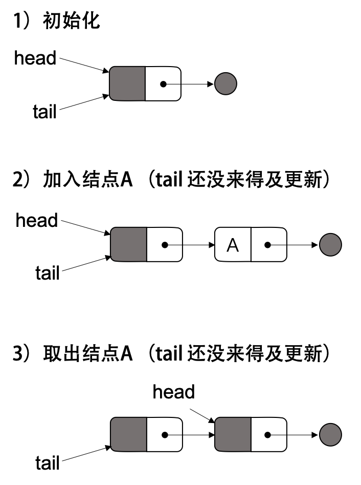

C++ 无锁队列
CAS 等原子操作
CAS操作 Compare & Set，或是 Compare & Swap
现在几乎所有的CPU指令都支持CAS的原子操作，X86下对应的是 CMPXCHG 汇编指令
bool compare_and_swap (int *addr, int oldval, int newval)
{
if ( *addr != oldval ) {
return false;
}
*addr = newval;
return true;
}
相似的还有以下原子操作：
- Fetch And Add，一般用来对变量做 +1 的原子操作
- Test-and-set，写值到某个内存位置并传回其旧值。汇编指令BST
- Test and Test-and-set，用来低低Test-and-Set的资源争夺情况
C++11：
template< class T >
bool atomic_compare_exchange_weak( std::atomic* obj,
T* expected, T desired );
template< class T >
bool atomic_compare_exchange_weak( volatile std::atomic* obj,
T* expected, T desired );
无锁队列链表实现
初始化
使用 dummy 节点
InitQueue(Q)
{
node = new node()
node->next = NULL;
Q->head = Q->tail = node;
}
入队列
v1:
EnQueue(Q, data) //进队列
{
//准备新加入的结点数据
n = new node();
n->value = data;
n->next = NULL;
do {
p = Q->tail; //取链表尾指针的快照
} while( CAS(p->next, NULL, n) != TRUE);
//while条件注释：如果没有把结点链在尾指针上，再试
CAS(Q->tail, p, n); //置尾结点 tail = n;
}
存在问题：
- 多个线程，如果存在一个线程在使用 CAS 更新 tail 指针的之前，线程停掉或是挂掉了，那么其它线程就进入死循环了
v2:
EnQueue(Q, data) //进队列改良版 v1
{
n = new node();
n->value = data;
n->next = NULL;
p = Q->tail;
oldp = p
do {
// 每个线程，自己 fetch 指针 p 到链表尾
while (p->next != NULL)
p = p->next;
} while( CAS(p.next, NULL, n) != TRUE); //如果没有把结点链在尾上，再试
CAS(Q->tail, oldp, n); //置尾结点
}
问题：
- 每个线程，自己 fetch 指针
p到链表尾。但是这样的 fetch会很影响性能
v3:
EnQueue(Q, data) //进队列改良版 v2
{
n = new node();
n->value = data;
n->next = NULL;
while(TRUE) {
//先取一下尾指针和尾指针的next
tail = Q->tail;
next = tail->next;
//如果尾指针已经被移动了，则重新开始
if ( tail != Q->tail ) continue;
//如果尾指针的 next 不为 NULL，则 fetch 全局尾指针到 next
if ( next != NULL ) {
CAS(Q->tail, tail, next);
continue;
}
//如果加入结点成功，则退出
if ( CAS(tail->next, next, n) == TRUE ) break;
}
CAS(Q->tail, tail, n); //置尾结点
}
直接 fetch Q->tail 到队尾
出队列
DeQueue(Q) //出队列
{
do{
p = Q->head;
if (p->next == NULL){
return ERR_EMPTY_QUEUE;
}
while( CAS(Q->head, p, p->next) != TRUE );
return p->next->value;
}
存在问题：
-
head和tail都指向同一个结点，一个 EnQueue 操作做了一半，此时的 p->next 不为 nullptr，但是 tail 指针还差最后一步，没有更新到新加的结点。在 EnQueue 并没有完成的时候， DeQueue 已经把新增加的结点给取走了，此时，队列为空，但是，head 与 tail 并没有指向同一个结点。引起一些并发问题

DeQueue(Q) //出队列，改进版
{
while(TRUE) {
//取出头指针，尾指针，和第一个元素的指针
head = Q->head;
tail = Q->tail;
next = head->next;
// Q->head 指针已移动，重新取 head指针
if ( head != Q->head ) continue;
// 如果是空队列
if ( head == tail && next == NULL ) {
return ERR_EMPTY_QUEUE;
}
//如果 tail 指针落后了
if ( head == tail && next == NULL ) {
CAS(Q->tail, tail, next);
continue;
}
//移动 head 指针成功后，取出数据
if ( CAS( Q->head, head, next) == TRUE){
value = next->value;
break;
}
}
free(head); //释放老的dummy结点
return value;
}
ABA 问题
ABA 问题最容易发生在 lock free 的算法中
- 进程 P1 在共享变量中读到值为 A
- P1 被抢占了，进程 P2 执行
- P2 把共享变量里的值从 A 改成了 B，再改回到 A，此时被 P1 抢占。
- P1 回来看到共享变量里的值没有被改变，于是继续执行。
CAS 判断的是指针的值，比如上述的 DeQueue() 函数，当我们做 CAS 的之前，如果 head 的那块内存被回收并被重用了，而重用的内存又被 EnQueue() 进来了，这会有很大的问题。
解决
使用 double-CAS（双保险的 CAS），例如，在 32 位系统上，我们要检查 64 位的内容
-
一次用 CAS 检查双倍长度的值，前半部是值，后半部分是一个计数器。
-
只有这两个都一样，才算通过检查，要把赋新的值。并把计数器累加1。
这样一来，ABA 发生时，虽然值一样，但是计数器就不一样（但是在 32 位的系统上，这个计数器会溢出回来又从 1 开始的，这还是会有 ABA 的问题）
队列的问题就是不想让那个内存重用，可以使用结点内存引用计数，阻止内存被回收
SafeRead(q)
{
loop:
p = q->next;
if (p == NULL){
return p;
}
Fetch&Add(p->refcnt, 1);
if (p == q->next){
return p;
}else{
Release(p);
}
goto loop;
}
Fetch&Add 和 Release 分是是加引用计数和减引用计数，都是原子操作，这样就可以阻止内存被回收了
参考链接
- 原文：https://coolshell.cn/articles/8239.html